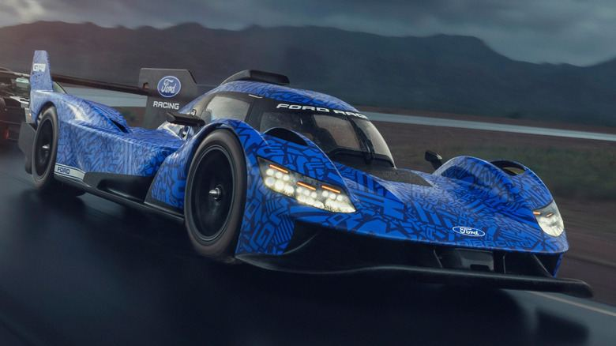
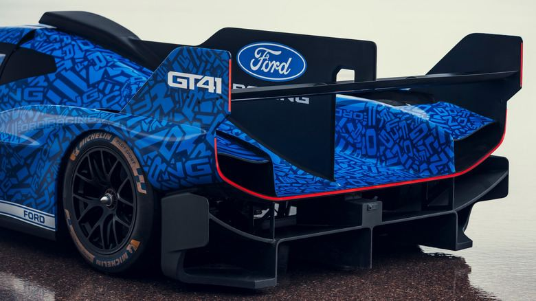

Ford 福特 · 全球首發 · 美國2026-11-26
Ford GT41 Hypercar 亮相：比 GT40 高一吋，雙色福特藍藏著白頭鷹與底特律精神
Ford Racing unveils Ford GT41 for 2027 Return to Top Class at Le Mans and in FIA World Endurance Championship
Ford Racing 11/26 在底特律 Ford Field 的感恩節美式足球賽上揭幕 GT41，這是 Ford 2027 年重返 WEC 最高組別與利曼 24 小時的 Hypercar。車子在歐洲完成 30 小時耐久等測試，搭載 Ford 自行開發的 5.4 升自然進氣 Coyote V8 加油電系統。
設計解析 Design Notes
- 名字就是尺寸跟 GT40 一樣用車高命名：從地面到進氣口 41 吋，延續 1966–69 年連贏四屆利曼的血統。
- 雙色藍塗裝測試期的偽裝換成兩種福特藍交織的圖案，細看藏有美國國旗、白頭鷹與底特律「The Spirit of Detroit」雕像；正式賽車塗裝 2027 卡達開幕戰前才公布。
- 低鼻頭與鏤空輪拱Carscoops 指出車頭是弧形碳纖維下擾流加低鼻頭，每顆頭燈有三條橘色細 LED；輪拱上方鏤空露出輪胎，後照鏡做在葉子板上。
- 車頂鰭與尾翼碳纖維車頂進氣口連到大型鯊魚鰭，車尾是大尾翼、端板細 LED 和一道橫貫的弧形紅色尾燈，下方是碳纖維擴散器。